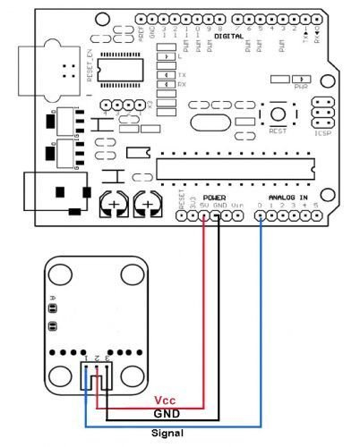
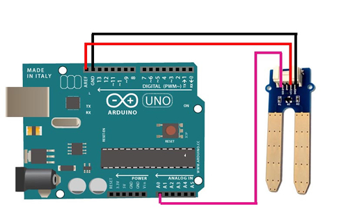

During this step, I have programmed all the sensors and hardware connected to my board to make them functioning, communicate with the board and computer, then do exactly what I needed on my project.
Activity 1: programming and testing components
I started programming and testing each component aside in order to see if it works properly and which type of data it returns. Therefore, I started with the DHT11 humidity and temperature sensor. I followed this connection scheme:

Then, I uploaded the following sketch that shall read the ambient temperature and humidity levels, and print them on the serial port:
DHT11-test
#include
#include
dht11 DHT11;
#define DHT11PIN 2
void setup()
{
Serial.begin(9600);
Serial.println("Sketch di test per sensore di umidita' e temperatura tipo DHT11");
delay(1000); // wait for sensor initialization
}
void loop()
{
uint8_t chk = DHT11.read(DHT11PIN);
Serial.print("Stato Sensore: ");
switch (chk)
{
case 0:
Serial.println("OK");
break;
case -1:
Serial.println("Checksum error");
break;
case -2:
Serial.println("Time out error");
break;
case -3:
Serial.println("The sensor is busy");
break;
default:
Serial.println("Unknown error");
break;
}
Serial.print("Umidita' (%): ");
Serial.println(DHT11.humidity, DEC);
Serial.print("Temperatura (C): ");
Serial.println(DHT11.temperature, DEC);
Serial.println(" ");
delay(2000);
}
Second, I moved to the Soil Moisture sensor. The basic connection scheme is as follow:

Then, I uploaded the following sketch that shall read the soil moisture levels, and print them on the serial port:
Moisture-sensor-test
int soil=0;
// the setup routine runs once when you press reset:
void setup() {
// initialize serial communication at 9600 bits per second:
Serial.begin(9600);
}
// the loop routine runs over and over again forever:
void loop() {
// read the input on analog pin 0:
int sensorValue = analogRead(A0);
sensorValue = constrain(sensorValue, 485, 1023);
// print out the value you read:
//Serial.println(sensorValue);
//map the value to a percentage
soil = map(sensorValue, 485, 1023, 100, 0);
// print out the soil water percentage you calculated:
Serial.print(soil);
Serial.println("%");
delay(1000); // delay in between reads for stability
}
Third, I moved to the LCD display component. The basic connection scheme is the following:
Therefore, I uploaded the following basic Hello-World sketch:
LCD-sketch
#include <LiquidCrystal.h>
LiquidCrystal lcd(12, 11, 5, 4, 3, 2);
void setup() {
//number of columns and rows on the LCD
lcd.begin(16, 2);
// display hello word
lcd.print("hello, world!");
}
void loop() {
// position cursor in column 0 row 1
lcd.setCursor(0, 1);
// print number of seconds from last rest
lcd.print(millis()/1000);
}
And this is the video of the test result:
Activity 2: programming all components
I connected all the components to the board, I prepared the following sketch that shall implement all the sensors together, print data on the LCD and send data to serial port.
In programming the sensors, I had to do the following tasks:
• Read data from both sensors• Check if the soil moisture level • Display data on LCD • If soil is too dry display alert on the LCD in order to provide water • Control display mode: in case of alert display blinks, otherwise auto scroll text • Convert moisture value to percentage • Send read data (moisture, air humidity and temperature) to serial port
The following is the sketch I prepared:
I3P Sketch
#include "DHT.h"
#include <LiquidCrystal.h>
#define DHTPIN 8
#define DHTTYPE DHT11
DHT dht(DHTPIN, DHTTYPE);
LiquidCrystal lcd(12, 11, 5, 4, 3, 2);
void setup() {
Serial.begin(9600);
lcd.begin(16, 2);
dht.begin();
}
void loop() {
double h = dht.readHumidity(); //read humidity
double t = dht.readTemperature(); //read temperature
double temper = analogRead(A0); //read moisture sensor
double m = ((1023.00-temper)/1023.00)*100.00; //convert soil moisture to %
if (isnan(t) || isnan(h)) {
Serial.println("Failed to read from DHT");
}
else {
if (temper>700){
lcd.clear(); //Clear display to avoid strange old characters
lcd.noDisplay(); //LCD Blinking code
delay(500);
lcd.display();
lcd.setCursor(0,0); //Display message on LCD
lcd.print("Soil = VERY DRY");
lcd.setCursor(0,1);
lcd.print("Urgently Water");
} else if (temper>350){
lcd.clear(); //Clear display to avoid strange old characters
lcd.setCursor(0,0); //Display sensor data
lcd.print("Temperature = ");
lcd.print(t);
lcd.print(" C");
lcd.setCursor(0,1);
lcd.print("Status = MOIST");
} else {
lcd.clear(); //Clear display to avoid strange old characters
lcd.setCursor(0,0);//Display sensor data
lcd.print("Temp = ");
lcd.print(t);
lcd.print(" *C");
lcd.setCursor(0,1);
lcd.print("Soil = SOAKED");
}
//Serial print sensors data
Serial.print(m);
Serial.print(",");
Serial.print(t);
Serial.print(",");
Serial.print(h);
Serial.print(",");
Serial.flush();
delay(500);
}
}
And this is the video of the sketch functioning with all sensors and LCd conncected:
Download Zone
The eagle design files are available for downloand here: